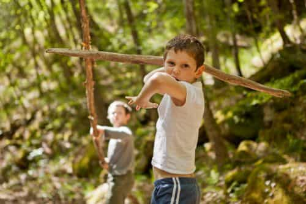
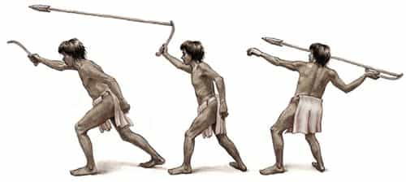
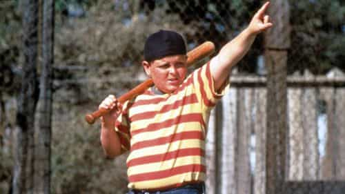
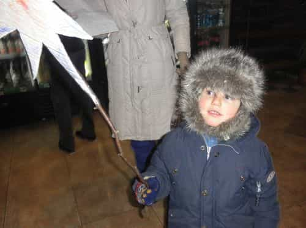

< < < Back
Why Boys Need To Be Allowed To Play Outside With Wooden Sticks – Return Of Kings
This morning my five-year-old son carried a stick on the bus on his way to kindergarten. I warned him not to bother people with the stick. Repeatedly. When he came dangerously close once too often, I broke the stick and gave him back the big end. He cried for about 30 seconds and took better care of what was left of it.
What a banal story! Banal, but exceptional in this day and age. How is that?
No Weapons. Period!

He’ll survive – to become a man
In middle-class America boys are not allowed to play with sticks. They are surrounded by women—mothers, teachers, and all kinds of counselors—and women have no sympathy for sticks. Their fathers have have generally been conditioned not to allow it either. Sticks are bad.
There is a huge literature about why sticks are bad. Kids use sticks as play guns, and guns are bad. Kids use sticks as play swords, and swords are bad. Kids hit each other with sticks, and fighting is bad. The feminists attribute all of this to patriarchy. Little girls don’t play with sticks! This is a sure sign that little boys are still not civilized.
Certain approved toys did evolve from sticks, such as baseball bats, tennis rackets and croquet mallets. Their use is tolerated, but the kids are carefully instructed in exactly how to use them. Goofing around with them is not in the program.
Why aren’t little boys civilized?

We have been throwing sticks since we learned to walk upright
Feminist dogma to the rescue! Because of the patriarchy. You see, they explain, little boys and little girls are born with identical capacities and like natures. Gender is a social construct, they say. And somehow, in spite of everything they have done to prevent it, these little boys are being socialized in the nasty masculine way. Quit it! (The title of one of their tracts) they say. Learn to play nice.
These feminists are quick to point out that guns and swords did not exist in our evolutionary environment. A child’s desire to play with guns and swords has to have emerged, they reason, during the evil history of male dominance, when societies were always fighting one another for land, trade routes, women and whatnot.
As usual, the feminists have it wrong. Five or six million years ago, as our ancestors left the jungles for the African savanna and began to walk upright, two things happened. First, their hands became free. Second, they no longer had any place to hide from predators. They put one and one together, developed opposed thumbs that could hold sticks, and learned how to fight off the predators. Sticks were useful tools and digging roots and tubers. Sticks are a deep part of our evolutionary history. As males fought off the predators and alien tribes, it is the males who wound up instinctively using sticks.
What benefit is there to letting him have sticks?
The world is filled with dangerous objects such as knives, bricks, ladders and matches. On his path to adulthood a child has to learn how to cope with all of them. As he watches adults manipulate these things he wants to try. If you do not let him, he will remain a perpetual child—and perpetual children are precisely what we have all too many of in modern America and Europe.
Growing up involves risk. There is always a trade-off between the risk of getting hurt, and the risk of growing up scared to take initiative. The United States errs very far in the direction of being hypercautious. We chauffeur them every place rather than let them walk. We hustle them to the pediatrician at the slightest sign of a cough or sniffle. Moreover, schools forbid normal childhood play such as the game of tag, and we don’t let them wrestle much or race one another on the playground.
Why are American schools so strict?

Sometimes we call a stick a stick
American schools are designed to accept all children from a given geographical area, regardless of their sex, socioeconomic and family background, or race. A school is a one-size-fits-all institutions.
America is schizophrenic in its dedication to equality. On the one hand, the great majority of Americans supports the public school systems. On the other hand, that same great majority will move as far into the suburbs as necessary to get away from the riffraff. The children of the riffraff are not interested in learning; they destroy the educational environment for everybody else.
Schools have had to implement draconian controls to manage the disorderly segment. Common sense is out the window. Because some boys do harass girls, the most mild-mannered lad may be expelled if he screws up the courage to peck a girl on the cheek –even if she enjoys it! The slightest rap on the shoulder can be construed as a fight.
Back in the 1950s the teacher reigned in the classroom. The whole system, from the board of education down through the principal, trusted the teacher’s judgment when it came to discipline. Principals valued and respected teachers who could handle their own problems without sending children to his office.
Today, wealthy helicopter parents and social justice warriors have beaten the education system into submission. In the place of human judgment, which is subject to error, they have stringent policies on everything. The upshot is that they expel kids on absurd pretexts. And a byproduct is that boys do not have an opportunity to use their own judgment, to become men. No sticks, nothing resembling a stick, is allowed in a modern classroom.
Fights and schoolyard culture

Swords into plowshares – this morning’s stick now holds a Christmas star
The battle against bullying is front and center in the modern school. Anything that might be construed as bullying is absolutely forbidden. For good reason—the rougher kids have no sense of restraint. They don’t have the sense to stop fighting once they have won, and they are inclined to bring lethal hardware into the game.
Bullying is inherently cruel, and children have a way of being cruel. It must be forbidden. The implementation of anti-bullying policies, however, has an anti-male flavor to it. Girls can be extremely cruel to one another, but they usually—not always—do so more by social than physical means, and it is harder to police.
Although serving in the Army is a way to get shot, and America’s youth may be safer now that the draft is ended, military service did fill a valuable role in turning boys into men. The same might be said of schoolyard fights. The cost might have exceeded the benefit, but those of us who grew up in an era in which even middle-class kids got involved in fights developed a certain self-respect, an ability to take care of ourselves that today’s kids seem to lack.
Even the innocent scuffles that nursery school kids get into are instructive. Somebody invariably winds up crying, sometimes just because they lose and sometimes because they are actually hurt a little bit. It is an occasion for this father to use words that are forbidden on an American schoolyard: “Be a man!” He has to learn that sometimes you lose, sometimes you get hurt, but you have to keep on going.
One of my profoundest lessons came when I was about eight. My grandmother took care of us because mother had more urgent business. I came home crying and Granny asked me what it happened. I said “Ricky beat me up.” She cocked her head like an old hen, observed “You’re bigger than Ricky – you beat him up!” That was all the sympathy I got. I learned to stop crying and take care of my own problems.
Needless to say, the proclivity of the lower classes to get into deadly fights has necessitated schools implementing policies setting low thresholds for activity that might be construed as a fight. Middle-class kids are forced into behavior patterns that would have been considered sissy 50 years ago. It is demonstrably true that fewer of them get hurt than used to. Nobody asks what the cost might have been in terms of sacrificed manhood.
Conclusion
The conductor and other riders on the bus seem absolutely at ease with my kid having a small stick, but likewise at ease with my constantly reminding him that he has to watch out. I make him leave his stick at the schoolyard gate. I’m glad I live in a country where the government does not interfere with parents in raising children, and where there is not an ethnic dimension to school discipline. Kids have the freedom to make small mistakes and learn from them.
This analogy seems to inform the divide in American culture. Progressives want government to make strong laws controlling, even abolishing sticks. Libertarians and conservatives are more inclined to trust the people – parents and kids – to use their own judgment. Good judgment sometimes comes up short – kids do get hurt with sticks. But on the other hand, abolition doesn’t work and it fosters a weak people who look for solutions from authority instead of solving their own problems.
Learning how to handle a stick is a step on the path to adulthood. An adult has rights involving dangerous objects, and responsibilities with regard to taking care of them. That’s what belonging to society means—your freedom ends where my nose begins. We have to live together, and be considerate. I used the example of stick to point out other obligations to our fellow man. Don’t stop and play in the middle of the sidewalk impeding people who are rushing to work. Don’t talk loudly when somebody else is on the telephone. And lastly, don’t poke anybody with that stick! But without the stick he wouldn’t learn.
Read More: 20 Things You Can Do Instead Of Playing Video Games